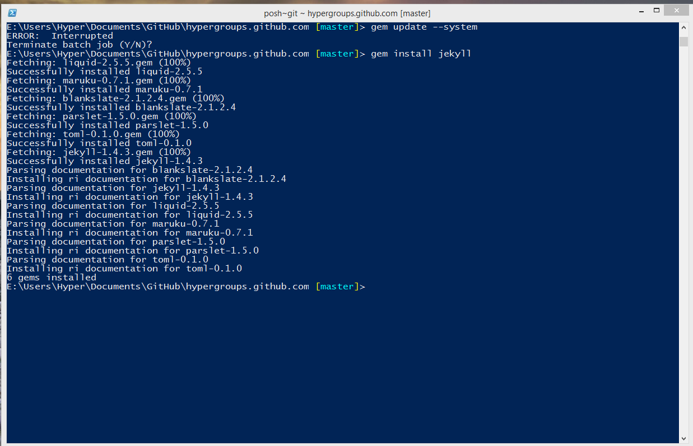

Jekyll-1.4.3的一个问题
重装系统后，直接gem install jekyll升级到了新版，同时遇到中文解码的老问题。
报错“invalid byte sequence in GBK”
Jekyll-1.3.0安装后

1.3.0版本之前的一个解决方法
将
self.content = File.read(File.join(base, name))
改为
self.content = File.read(File.join(base, name), :encoding => “utf-8”)
Jekyll-1.3.0的中文解码问题
解决方法
添加解码指定选项
E:\\Ruby200-x64\\lib\
uby\\gems\\2.0.0\\gems\\jekyll-1.3.0\\lib\\jekyll\\convertible.rb
def read_yaml (base, name, opts = {: encoding = >"utf - 8"})
Jekyll-1.4.3
解决方法1
类似Jekyll-1.3.0的解决方法，但是还不知道，谁研究下？
解决方法2
删除Jekyll-1.4.3，安装Jekyll-1.3.0
gem uninstall jekyll
gem install jekyll --version "=1.3.0"